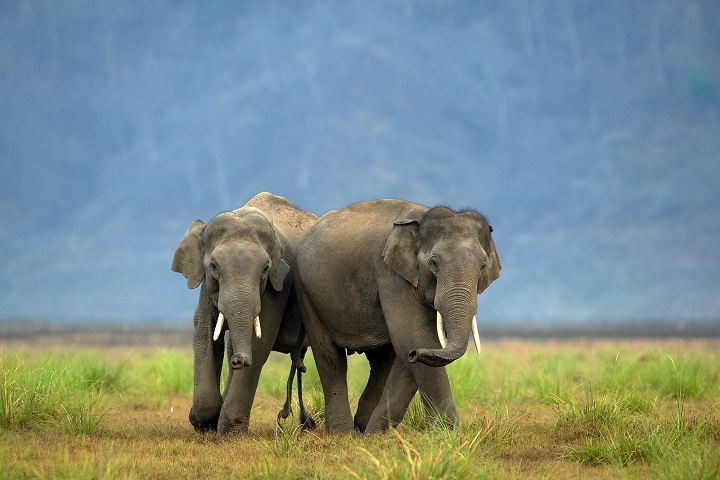

Corbett National Park

Location: Uttarakhand, India
Nearest City: Ramnagar
Coordinates: 29.5311° N, 78.7749° E
Area: 1,318.54 km² (including buffer)
Established: 1936
Governing Body: Uttarakhand Forest Department
About Corbett National Park
Corbett National Park, located in the Nainital district of Uttarakhand, is India's oldest and most prestigious national park. Established in 1936 as Hailey National Park, it was created to protect the endangered Bengal tiger. It was later renamed in honor of the legendary hunter-turned-conservationist, Jim Corbett. This park was also the first to come under the Project Tiger initiative in 1973, highlighting its significance in India's conservation history.

Wildlife
Corbett is a haven for wildlife enthusiasts. While the majestic Bengal tiger is the main draw, the park's diverse ecosystem supports a wide range of fauna:
- Bengal Tiger
- Asiatic Elephant
- Leopard
- Sloth Bear and Himalayan Black Bear
- Sambar, Chital (Spotted Deer), and Barking Deer
- Gharial and Mugger Crocodiles
- Langurs and Rhesus Macaques
- Over 600 species of resident and migratory birds
Flora
The park's vegetation is a rich mix of dense moist deciduous forest and vast grasslands known as 'chaurs'. The dominant tree is Sal, which covers almost 75% of the park. Other prominent species include:
- Sal (Shorea robusta)
- Khair-Sissoo forests
- Chir Pine
- Bamboo
- Various shrubs and grasses
Safari Zones & Experience
For tourism and wildlife viewing, the park is divided into several zones, each offering a unique landscape. Safaris are conducted in open-top jeeps and canters. The main zones are:
- Dhikala: The largest and most famous zone, known for its vast grasslands and excellent tiger sighting opportunities. (Note: Only accessible via Canter safari or for those staying in the forest lodge).
- Bijrani: A popular zone with a mix of dense Sal forest and grasslands.
- Jhirna: Open year-round, offering good sightings of sloth bears and elephants.
- Dhela: The newest zone, known for its rich birdlife.
- Durgadevi: Hilly terrain ideal for bird watchers and those seeking tranquility.
Other Attractions
- Corbett Museum: Located in Kaladhungi, this was the former home of Jim Corbett.
- Garjia Devi Temple: A revered temple situated on a large rock in the middle of the Kosi River.
- Corbett Falls: A scenic 20-meter waterfall nestled in a serene forest setting.
- Dhikala Watchtower: Offers a breathtaking panoramic view of the Dhikala grasslands and Ramganga river.
Visitor Information
Best time to visit: November 15th to June 15th. The park is closed during the monsoon season (July to mid-October), although Jhirna and Dhela zones may remain open.
Entry permits: Safari permits must be booked online well in advance, as they are limited.
Accommodations: A wide range of hotels, resorts, and forest rest houses are available in and around Ramnagar.